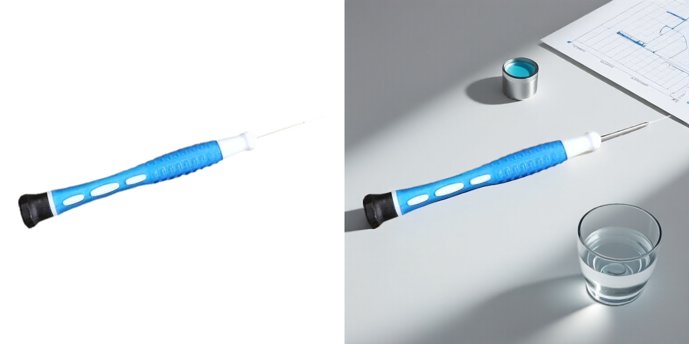
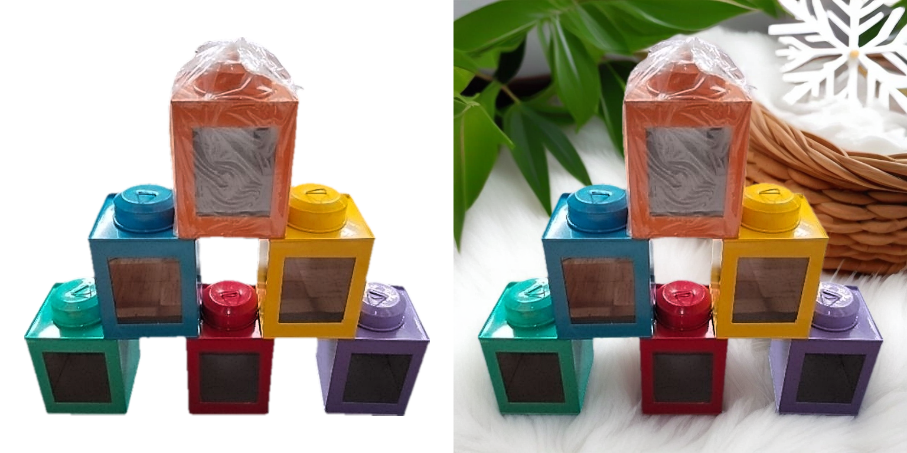

Create a silver Eiffel Tower charm against a soft, blurred background of a cozy café setting with a pinkish hue. The product should be centered, with a white marble table and a glass of coffee in the background. Use soft, natural lighting to highlight the product's details and create a warm, inviting atmosphere.

Create a product photo. Place the blue and white medical instrument in the center, angled slightly to the right. Add a soft, diffused light source from the left to highlight the product and create a gentle shadow on the right. Include a small, clear glass of water in the top left corner and a small, detailed medical chart or diagram in the top right corner. The composition should be balanced and clean, with a focus on the product.
Create a minimalist kitchen scene with a white countertop. Place the product in the center, with a soft, diffused light source from the upper left to highlight its reflective surface. Use a blurred background with a hint of kitchen utensils and a clean, modern aesthetic. The composition should be balanced, with the product as the focal point, and the lighting should be warm and inviting.
Place the product in the center of the white space, with a sandy beach background. Use a shallow depth of field to blur the background, focusing on the product. Use natural lighting to create a bright and inviting atmosphere. Use a perspective that makes the product appear prominent and easily visible. Use a color palette that complements the product, with warm tones to highlight the product.
Create a minimalist background with a light beige carpet. Place the product in the center, slightly elevated on a platform to highlight its design. Use soft, diffused lighting to avoid harsh shadows and emphasize the texture of the product. Keep the background clean and uncluttered to maintain focus on the product.
Create a modern, minimalist background with a light-colored wooden floor and a neutral-colored wall. Place the product against the wall, slightly angled to the left, with a soft, diffused light source illuminating the product from the left side. Use a clean, uncluttered composition with a focus on the product's natural wood grain and the contrast between the product and the background.

The product is surrounded by a woven basket with green leaves and a white snowflake decoration. Use soft, natural lighting to highlight the product. Compose the image with a balanced perspective, ensuring the product is the focal point. Use a neutral color palette with pops of color from the product to create a clean and modern look.
Create a minimalist background with a light green textured wall. Place the product in the center, slightly angled to the right. Use soft, diffused lighting to highlight the product's metallic finish. Include a small branch with green leaves in the top left corner for a natural touch. Keep the composition simple and clean, focusing on the product's sleek design.
Place the product on a white surface with a subtle shadow. Use a soft, diffused light source to highlight the product's texture and details. Keep the background minimal and clean, with a slight gradient from white to light gray to avoid distraction. Compose the image with the product slightly angled, emphasizing its features. Use a shallow depth of field to ensure the product is in sharp focus.
Place the product in the center of a minimalist room with a large window. The room should have a light beige wall and a white shelf with a yellow cushion. Use soft, natural lighting to highlight the product. Keep the background clean and uncluttered to emphasize the product's sleek design.
Place the product in the center of a minimalist white background with a subtle gradient from light to light gray. Use soft, diffused lighting to create a gentle shadow beneath the product, enhancing its three-dimensional appearance. Compose the image with the product slightly angled, showcasing its design and features. Keep the background clean and uncluttered to ensure the product stands out.
Place the product against a light grey marble background with subtle veining. Ensure the product is centered in the frame, with a slight angle to add depth. Use soft, natural lighting from the left side to highlight the product's texture and create gentle shadows. Keep the background clean and uncluttered to emphasize the product's simplicity and elegance.